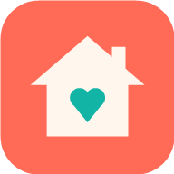

Sto aprendo casa…
Niente Internet 📵
L'app ha bisogno della rete per pescare i tuoi dati da Google.
Riprova
Ultimo passo! 🔧
Incolla qui l'indirizzo dell'app che ti ha dato Google Apps Script (quello che finisce con
/exec
).
Fatto, apri l'app
Vedi un errore o una pagina bianca?
Entra con Google
✕